～Bagan 的藝術家～
來到 Bagan，原本有想過去坐熱氣球，不過坐這熱氣球的價錢真的貴到冇朋友，要 290 美元一位，加上不是本地人經營的，所以早就打消念頭。不坐氣球不用晨早起床。吃過早餐，出發去 Mount Popa。
緬甸的「山」，其實真的差不多，Mandalay Hill，Saigan Hill，Mt. Popa，都是那些小山然後山上有數間 Podoga，所以今天我主要想去的，其實不是那個小山，而是 Mt. Popa 不遠處再高再大一點的山，也叫 Mount Popa，為什麼想上去，只因旅遊書說這山的頂是個火山 crater 的邊。
因為我嚮往那些火山和 crater，更因為想不到緬甸竟有火山，所以一心要去。事實上原來緬甸以前有過多次地震，一些著名的 Pogoda 也因地震受過破壞，現時我們看見的都是經過修復。上山要有 guide，由 Nyaung U 包車連行山 guide 要 60 美元，此行不時比預期用得多錢。
Mt. Popa 在 Nyaung U 東南面，路程四十多公里。駕了個多小時，在一間小屋前停下，小屋前有一隻牛，牛被綁在一輛木製的東西，像是打磨的工具。這地方原來是製造一種糖，這糖取自樹上，導遊說這樹全身也有用，幹和葉可用來建屋，樹汁可用來製糖。這種糖就是用來製緬甸餐的甜點中的糖果，除此之外還用來製酒。
看完這裏，正式上山去。看書說又 crater 又要有 guide，以為是很難行的，但實際上，比香港一些一般行山的難度還低。只不過是不懂路而已，沿路導遊先生還說本地人常上山玩呢。和導遊邊行邊談，雖然我已經買了去機票去 Sittwe，但總想問個究竟，可以如何去 Mrauk U。
每個省的當地人都有不同說法，導遊竟說可以從陸路去，不過，要超多錢的，要包車更要中途過一夜，再加導遊費，他說要 500 美元吧。真是嚇死人，不過，若果有錢有時間，這旅程比坐飛機更好。
因為之前在旅行社問行程時職員神色凝重地說上山下山要很久，所以我不敢慢行，一直的上呀上，反正沿路都在樹林中，沒有風景好看。結果，很快就到達 crater 邊。
這和我想像的 crater 差很遠，附近的泥土只有少許黑色的石頭，我想，這裏已經倒塌了很多很多年，這裏只是 crater 倒塌剩下的一小部分的一個角仔，而且很矮，周圍都已經長滿樹木，最高的山頂還用來建了電視塔。由這裏看下去，山下一片平地，沒有多少樹木，導遊慨嘆政府把樹林都弄走了，越來越少，動物都沒有地方住，以前有很多野生山豬。
導遊又抱怨這裏資源全被政府佔有，政府官員自己富裕不理平民生活，就不久前阿邊個個仔就從外國買了部什麼名車運過來，用了很多錢。怎麼這種故事我不感到陌生？
不過聽說開始開放，來年會有中國、台灣和韓國的公司投資電訊，到時電訊會比現在發達吧，起碼上網速度會有改善，不過，資訊過濾和監控仍然存在。政府除了操控資源和訊息，還設立極多限制，如國民出國的申請費用超高，以及各樣的牌照費也高昂。
例如在 Kalaw 電單車司機寧冒無牌駕駛罰款的險，也不願付龐大費用。又原來 Internet Cafe 的收費雖然可觀，可惜要開一間的牌照費用更可怕，要 3000 美元，添置每部電腦的費用也高，在香港二三千港元可買一部新電腦，這裏要 900 美元，更別說配備不是很好（不過他們已用 Office 2007 了）。
在另一個山頭上的小 Stupa 旁邊看看風景，之後我們下山去，沿路開始見到有人上山，有些當地人是赤腳的，赤腳對他們說十分平常。我們回到起點，包車的司機還在車中睡著。接著我們去另一個 Mt. Popa，這個小山也是 crater 倒塌剩下的產物，這個是和 Mandalay Hill 一類的小山，遊客極多，又是沿路有東西小吃賣，以及有些 Pogoda 在山邊和山頂。
不過今次上這種山的感覺有點不同，因為有導遊給我講解一些我之前不明白的東西。 Mt. Popa 其實本身是敬奉那個「Popa」的，以及眾多的「Nats」，並不是佛教的東西，可以說是一些精靈，或神仙，他們有自己的故事。
但為什麼我在多數的 Pogoda 中會見到這些非佛教的東西，原來是因為滿足不同人的需要，當然佛教的就放在主要位置，然後 Nats 的就在旁，而我平時看見的一些「果盤」，即有很多「青 BB」香蕉和椰子，就是用來供奉 Nats 的。
很快便完成這個一日遊，我也很想早點回去 Nyaung U，再去看古蹟。不過，回到旅館想租一部單車，卻全都租出了，在附近也找不到，那麼索性不去了，留在 Nyaung U 逛。
我再行去 Shwezigon Paya，尋找那書檔買老翻書，當我再進入 Shwezigon Paya，差不多空無一人（人們通常已去了那些看日落熱點），才發覺這裏也很好看，我相信只要寧靜，便會顯得這些 Pogoda 美麗。
不過因為我今天穿了襪，所以給守衛兇惡地趕走，我忘了其實有些地方連襪也不可以穿，我初時覺得很無理，但這是人家的傳統，在多年前在被殖民統治時，他們可以因為堅持赤腳而和西方人抗爭發生流血事件，可不是玩的。
日還未落，走到那條很多食店的街，看看吃什麼好，這條街的食店特別貴，想吃好點的話也要 8000 Kyat。走著走著，突然看見一間小店，店的門前掛著很多大小不一的樽，樽上畫滿了彩色的圖案。
店內掛了一些油畫，店主 Yaw Na Than 是個藝術家，主要是畫在玻璃樽上，也有畫在畫布上。我買了兩個小樽，他送我一個未完成的樽，還再計我便宜一點。他說整天也沒有生意，我很奇怪，這條街應該很旺，而且我以為西方人會喜歡這些，但原來不。
我卻覺得 Yaw Na Than 的作品很有特式，他把自己的想法或緬甸的景物畫在玻璃樽內。雖然我不是在緬甸很久，但主要的旅遊區也算做曾經一遊，看過不少「藝術家」以及他們在街檔賣的「藝術品」，差不多全都是那種，以僧人或古蹟日落為題的油畫，尤其在 Mingun 的那條街，我相信那些東西一定很受歡迎，但是創意和特色相對很低，是商品的多。
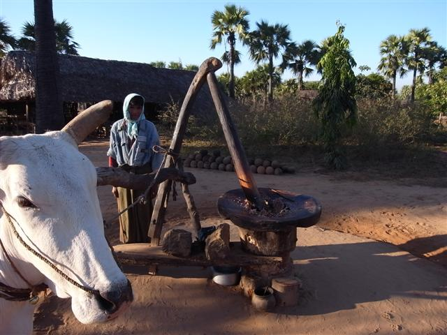
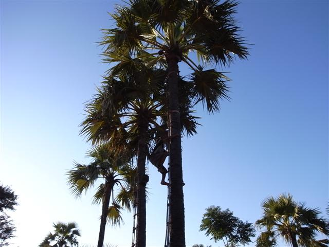
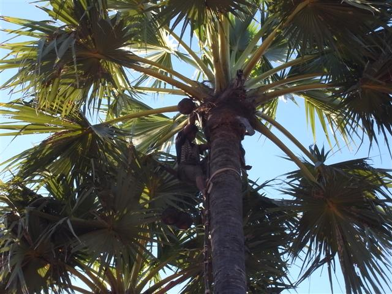
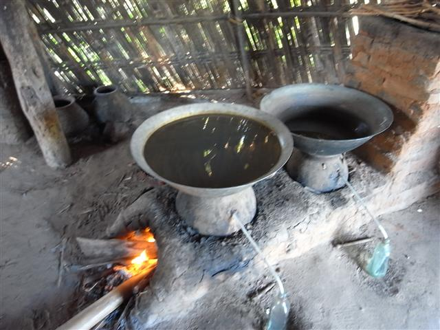
製酒
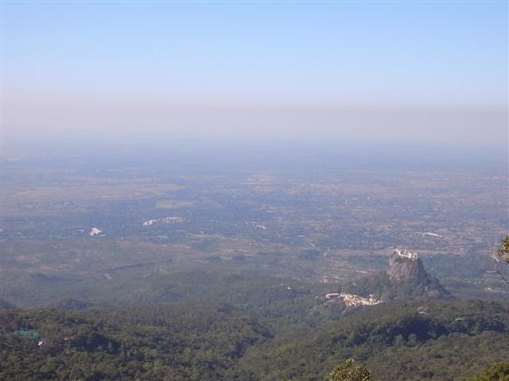
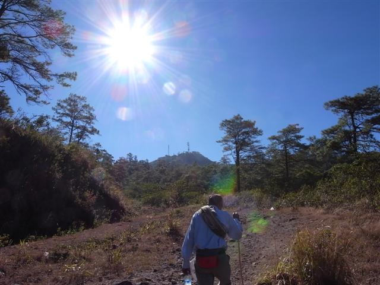
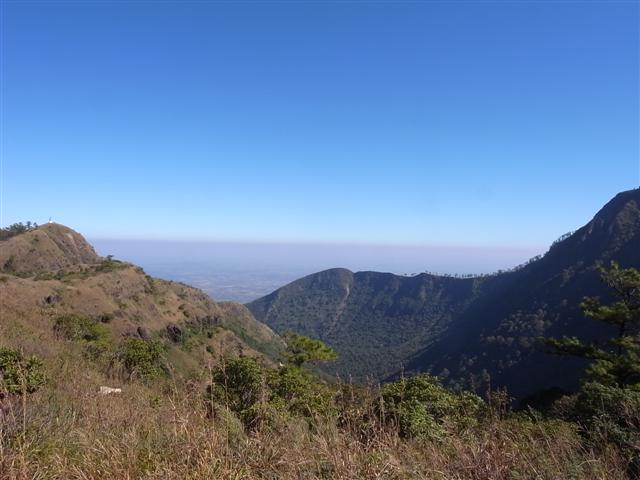
山頂
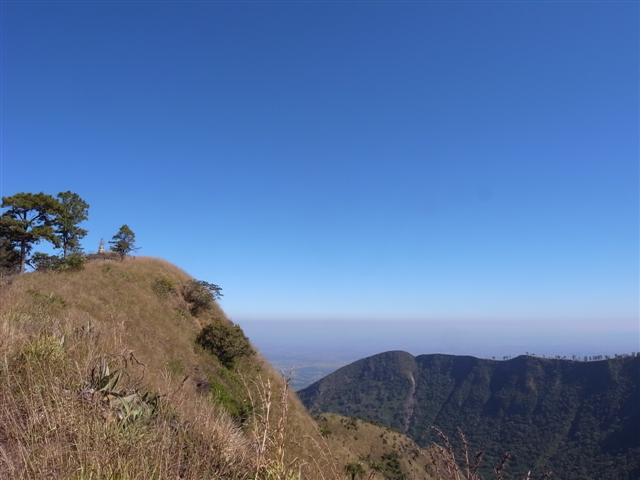
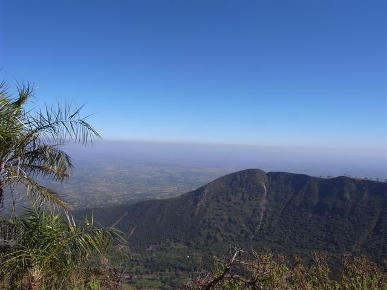
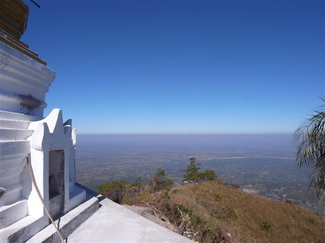
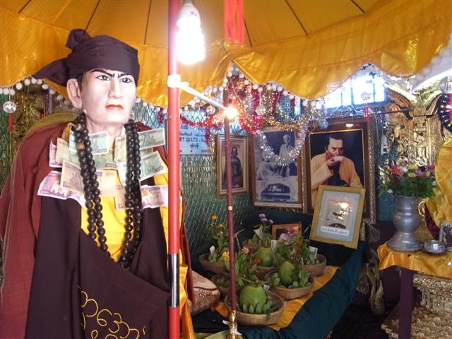
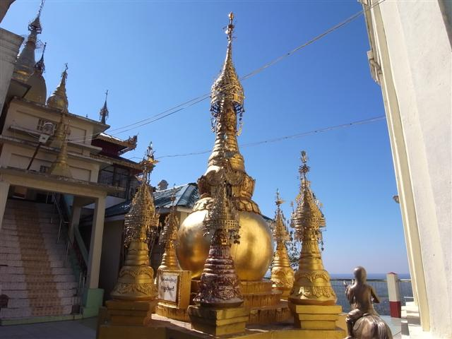
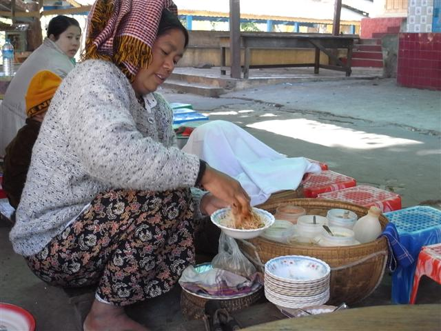
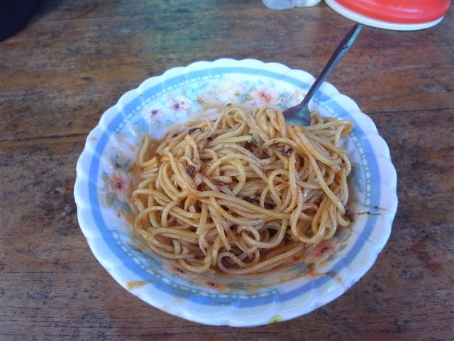
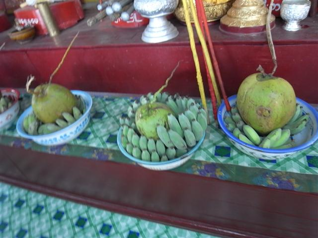
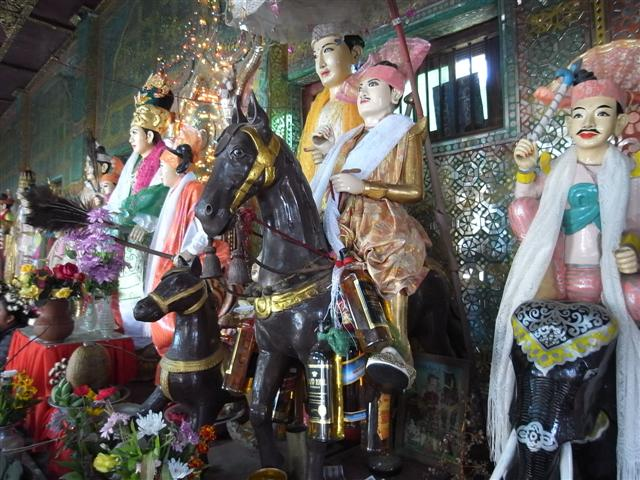
Nats
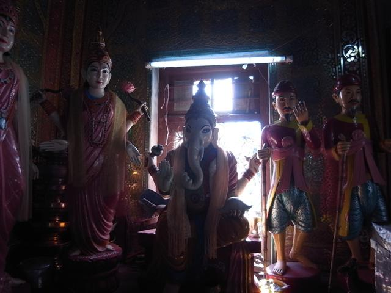
印度神 Ganesh?
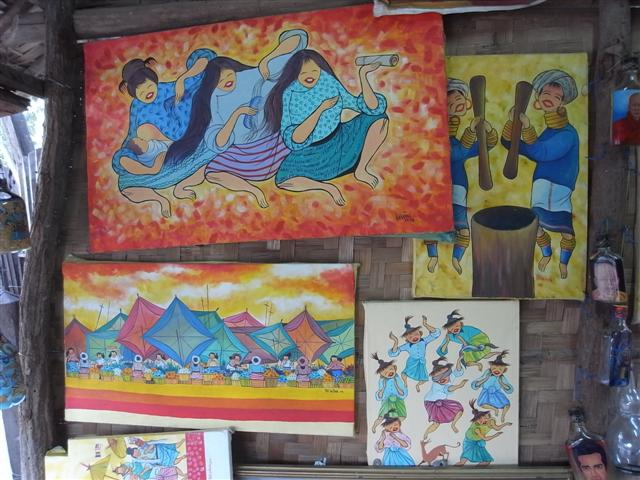
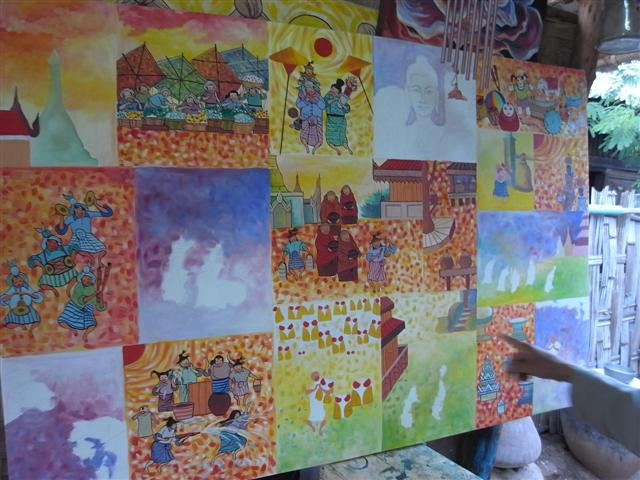
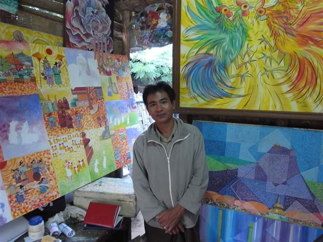
Yaw Na Than
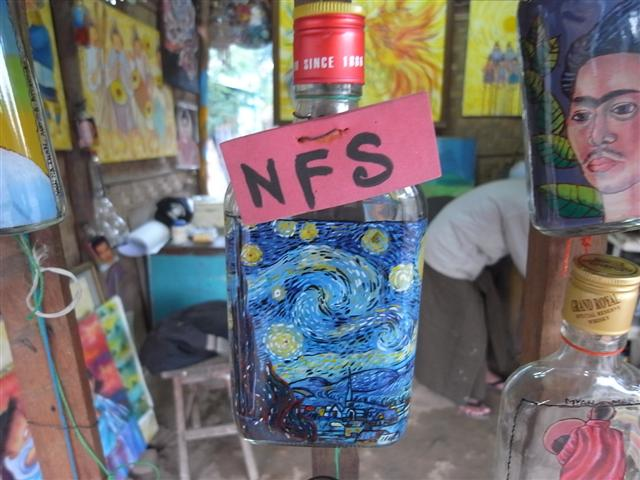
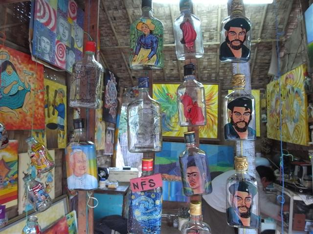
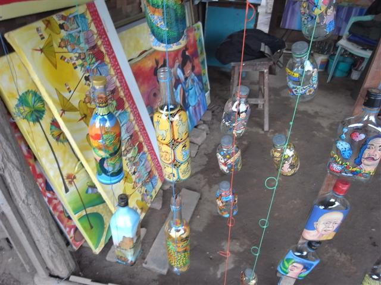
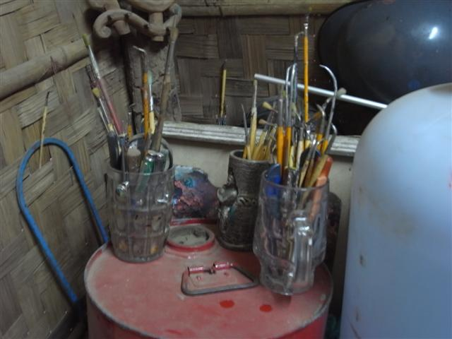
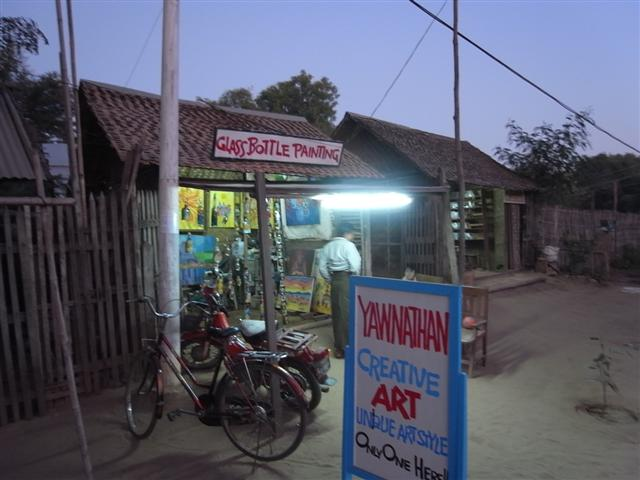